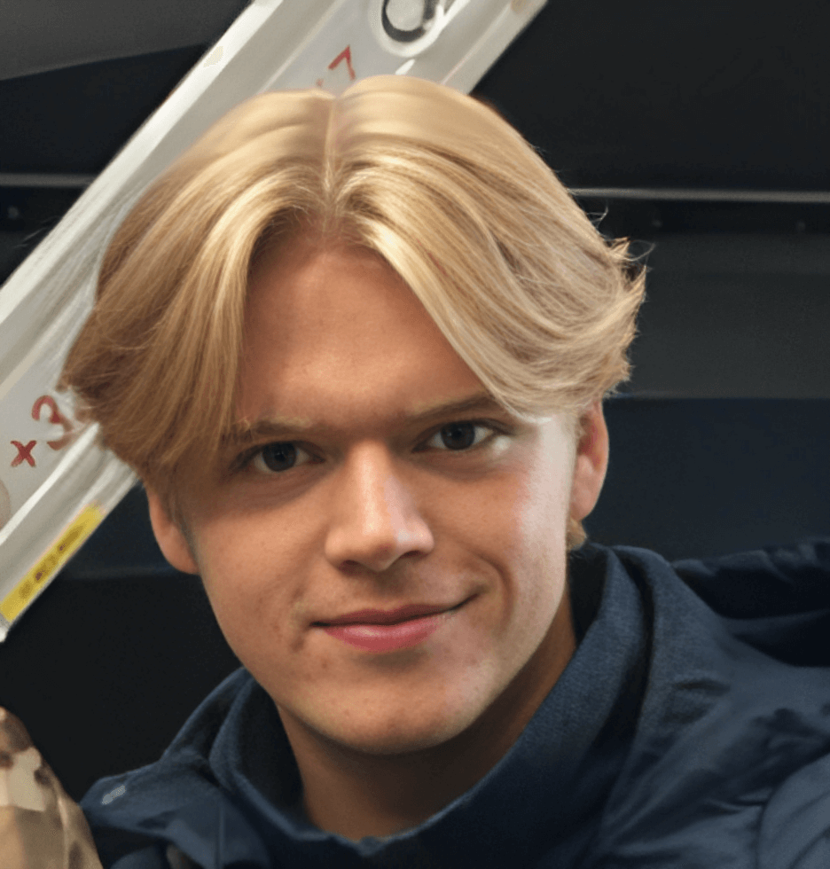

Wie ben ik?
Ik ben Elias Grinwis Plaat Stultjes. Ik ben 19 jaar en woon in Nijlen. Momenteel studeer ik Toegepaste Informatica aan de Thomas More hogeschool te Geel. Informatica is mijn grote passie. Al van kleinsaf aan ben ik geboeid door alles wat met computers te maken heeft. In de middelbare school heb ik dan ook gekozen voor de richting “Ondernemen & IT”. Ik ben zeer benieuwd naar wat ik de volgende jaren allemaal zal bijleren. Ik kijk alvast uit naar deze nieuwe uitdaging.
